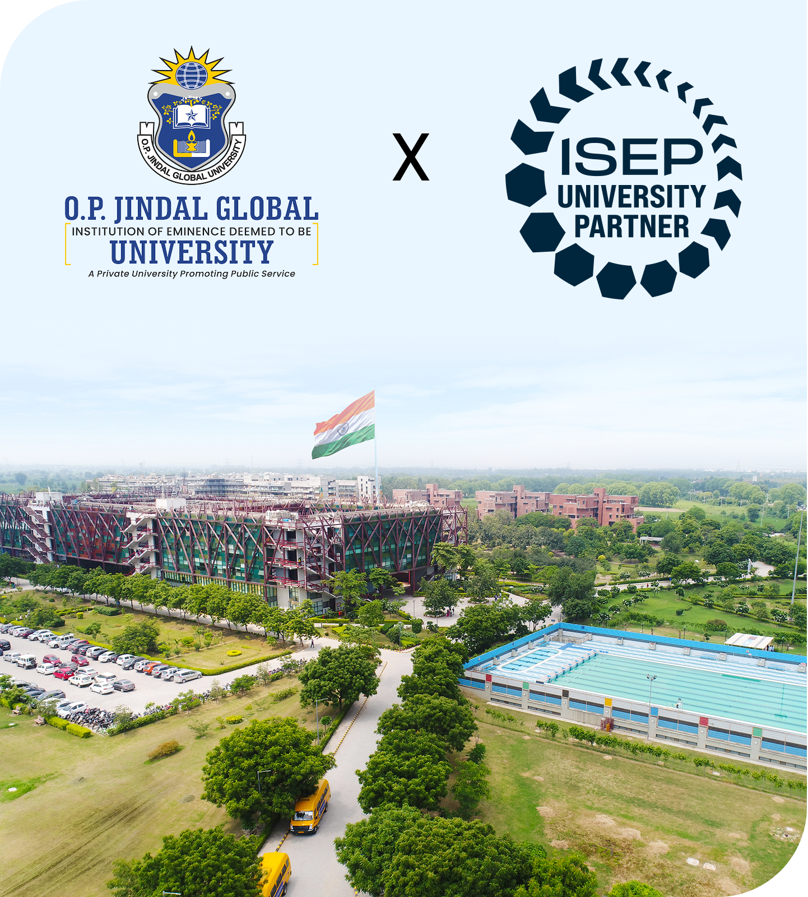
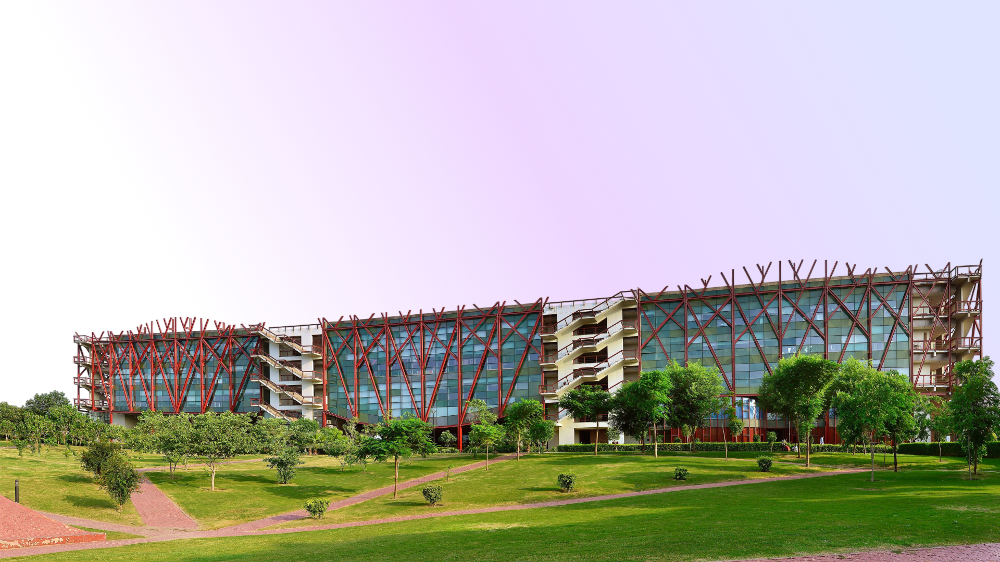
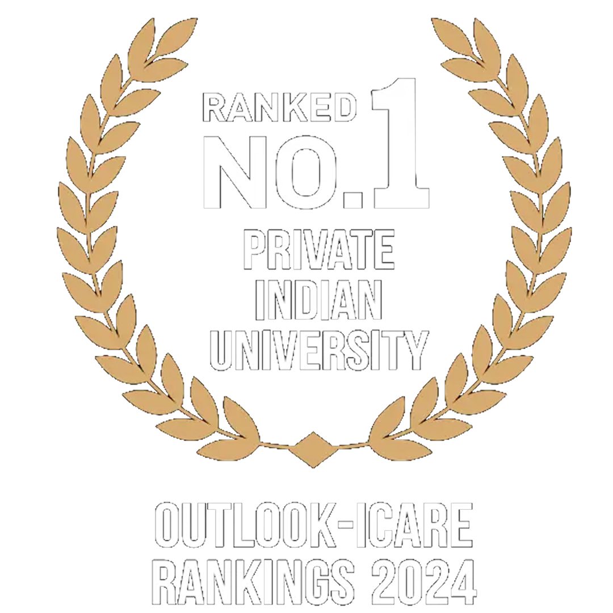

Full Payment
Pay remaining fee in one go
- Registration Fee: Pay the applicable registration fee at the time of registration.
- Remaining Programme Fee: Pay the complete remaining programme fee within 10 days from the date of registration.
Master the Science, Strategy & Systems Behind Climate-Resilient Futures.
ENROLL NOW →The M.Sc. in Environmental Change & Sustainability, delivered fully online by JGU Online, is crafted for learners who want to understand—and influence—the rapidly shifting dynamics of our planet. The programme combines advanced climate science, ecological systems, sustainability policy, and environmental data analytics to establish a solid foundation in both theory and practical application. With a curriculum designed by the Jindal School of Environment & Sustainability, you gain the intellectual depth and analytical tools needed to interpret environmental change and shape meaningful climate solutions.
The distinctiveness of this master's programme lies in its global and forward-thinking perspective. You will benefit from the guidance of distinguished faculty and tackle real-world sustainability issues through case studies, data-driven assignments, and research-led inquiry. The programme is designed to prepare you for impactful careers in fields such as environmental consultancy, corporate sustainability, climate policy, and development practice. It provides you with the essential interdisciplinary expertise and leadership skills needed to drive meaningful change, all while offering the flexibility of learning from any location worldwide.

O.P. Jindal Global University is an Approved University Partner of the Institute of Sustainability and Environmental Professionals (ISEP), a leading international body supporting excellence in environmental and sustainability practice. Through this partnership, students receive a complimentary ISEP Student Membership, enabling access to global professional resources and networks throughout the duration of their programme.
Upon successful completion of the M.Sc., graduates qualify for the GradISEP designation—an internationally recognised credential that strengthens academic and professional standing in the sustainability sector. Graduates may also pursue an accelerated route to Practitioner Membership (PISEP) through ISEP’s recognised competence-based assessment.
This partnership reflects JGU’s commitment to fostering academically grounded, professionally prepared leaders in environmental and sustainability practice.
Explore the M.Sc. in Environmental Change & Sustainability in detail by downloading the full course brochure.
Get comprehensive insights on curriculum, faculty, learning outcomes, and career pathways.
DOWNLOAD BROCHURETotal Tuition Fee: INR 2,75,000
| Fee | Amount | Due Date |
|---|---|---|
| Registration Amount | INR 25,000 | Upon acceptance of Offer Letter |
| Instalment 1 | INR 1,25,000 | Before Batch Commencement |
| Instalment 2 | INR 1,25,000 | By 15th July 2027 |
Statement of Purpose (SOP):
Candidates must submit an SOP of around 800 words outlining how this programme supports their
short-term and long-term career or personal growth.
| Feature | JGU – M.Sc. in Environmental Change & Sustainability (Online) | Regular Environmental / Sustainability Master’s |
|---|---|---|
| Programme Design | One-year, interdisciplinary M.Sc. blending climate science, sustainability policy, green markets, and technological tools like AI & GIS. | Often siloed into either pure environmental science, policy, or management, with less integration across science, markets, and technology. |
| Delivery Mode | Fully online, designed from the ground up for digital delivery by the Jindal School of Environment & Sustainability | Frequently, campus-based or hybrid, dedicated, fully online formats in this niche are still relatively limited. |
| Duration & Structure | Approx. 12 months, 60 credits, with a compact, intensive structure that covers foundations, advanced topics, and applied components. | Many programmes run 18–24 months, with longer completion timelines and more diffuse structures. |
| Curriculum Focus | Strong emphasis on climate change, environmental systems, sustainability policy, green markets, AI & ML in sustainability, climate modelling, and energy–carbon markets. | May focus primarily on classical environmental science or development studies, with fewer modules on carbon markets, AI/ML, and data-driven sustainability. |
| Applied Learning | Integrates real-world projects, policy analysis, environmental assessments, and climate risk evaluation, preparing students for applied roles. | Project work is common, but explicit focus on climate risk assessment, policy practice, and green-market applications can be less pronounced. |
| Technology Integration | Specific courses on AI and Machine Learning in Sustainability and GIS/tech-enabled tools, aligning with emerging “climate-tech” roles. | Technology may be limited to GIS or basic modelling; AI/ML-driven sustainability content is not yet standard across most programmes. |
| Career Orientation | Designed to prepare learners for environmental consultancy, corporate sustainability, policy-making, and climate-focused roles, with skills mapped to these pathways. | Outcomes are often framed broadly (e.g., “environmental sector” or “research”), with less explicit alignment to green markets and corporate sustainability careers. |
| Academic Home | Housed within Jindal School of Environment & Sustainability (JSES) at O.P. Jindal Global University, a globally ranked private university with a strong international profile. | It may be situated within traditional science or geography departments; international branding and global recognition vary significantly by institution. |
| Flexibility for Professionals | Fully online, compact duration, and practice-oriented design make it suitable for working professionals and mid-career learners. | Many programmes still require relocation, full-time on-campus attendance, or extended study periods that can disrupt careers. |
Support organisations with environmental impact assessments, compliance, sustainability planning, and risk evaluations.
Drive sustainability reporting, ESG metrics, carbon footprint tracking, and environmental strategy within businesses.
Contribute to policy development, climate action planning, and regulatory frameworks in government or public agencies.
Work on community development, climate resilience, conservation, and sustainability projects with national or international NGOs.
Analyse ecological risks, assess environmental impacts of projects, and recommend mitigation strategies.
Lead sustainability initiatives, resource efficiency programmes, and climate-aligned organisational practices.
Research climate change, environmental systems, sustainability models, and evidence-based policy solutions.
Support innovation in renewable energy, carbon solutions, sustainable cities, and emerging climate-tech sectors.









Reach out to know more about programmes, admissions, and opportunities